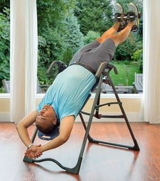

Бегуны: Предотвращение и уменьшение боли в пояснице
Для вас, бегуны, есть хорошие новости: исследователи выяснили, что вопрос боли в пояснице не так актуален для спортсменов по сравнению с теми, кто не занимается регулярными физическими упражнениями. На самом деле, что касается именно бегунов, исследования не выявили взаимосвязи между болью в пояснице и бегом на длинные дистанции.
Но этот факт не облегчает жизнь тех бегунов, кто все-таки испытывает боль в спине. Бег создает повторяющуюся нагрузку на все суставы и их компрессию, иногда в течение длительного периода времени. У тех бегунов, кто уже имеет проблемы со спиной, такая физическая активность может только усугубить ситуацию.
Итак, что же вызывает боль в пояснице у бегунов и что можно сделать для ее предотвращения?
Симптомы боли в пояснице у бегунов
Бегуны с болью в спине как правило имеют три основных жалобы:
- Временная мышечная боль, или мышечные спазмы, могут возникнуть внезапно и ощущаться так, как будто мышцы заблокированы или сильно сжаты. Такая боль может быть довольно сильной и мучительной.
- Стреляющая или отдающая в одну или обе ноги боль широко известна, как ишиалгия. Причиной этого вида боли часто являются защемление нерва или такие скрытые причины, как, например, межпозвоночная грыжа.
- Хроническая ноющая боль в пояснице в некоторых случаях может указывать на артрит, но также она является признаком перегрузки. Вы можете почувствовать ноющую боль, распространяющуюся по всей пояснице или она может быть сосредоточена в какой-то одной области.
Причины боли в пояснице у бегунов
Боль в спине может быть вызвана физической активностью или наоборот, ее отсутствием – правда заключается в том, что существует большое количество скрытых причин, которые могут способствовать ее появлению, начиная с выбранного вами образа жизни и заканчивая техникой бега. Вот самые распространенные причины боли в спине у бегунов:
- Недостаточная подвижность тазобедренных суставов: По данным исследования, опубликованного в научном журнале по ортопедической и спортивной лечебной физической культуре, «оказалось, что у бегунов существенно ограничены движения по сгибанию бедра.» Недостаток подвижности в области тазобедренных суставов вместе с напряженными мышцами задней поверхности бедра могут привести к развороту таза вперед или назад. Такое смещение создает излишнюю нагрузку на позвоночник.
- Недостаточная стабильность мышц кора: Также, как подвижность может повлиять на правильность положения таза и позвоночника, мышцы, окружающие позвоночный столб, имеют огромное влияние на правильное положение позвонков. Слабые мышцы кора (мышцы брюшного пресса и мышцы нижнего отдела спины) могут создавать излишнюю нагрузку на позвоночник, так как с именно его помощью организм будет пытаться стабилизировать согласованность нижней и верхней частей тела во время бега.
- Плохая осанка: При том, что плохая осанка во время бега может стать причиной боли в пояснице, большое количество исследований показали, что сидение в офисе на протяжении всего дня является одной из самых значительных причин как плохой осанки, так и боли в пояснице.
- Структурные повреждения: Позвоночник человека состоит из большого количества костей меньшего размера, которые называются позвонки. Между каждым из них располагается небольшой мягкий диск, который играет роль амортизатора при компрессии и движении. Если диск не получает достаточного увлажнения и отдыха, может возникнуть грыжа. Это означает, что на диске появился разрыв, часть его мягкой внутренней составляющей выдается наружу и давит на нервные окончания в позвоночном столбе. Дегенеративное заболевание межпозвонковых дисков – это еще одно структурное повреждение, которое может быть вызвано занятиями бегом.
- Повторяющиеся нагрузки и компрессия: Бег по твердым поверхностям, таким как бетон или асфальт, приводит к небольшим сотрясениям и компрессии позвоночника при каждом шаге. Со временем, позвоночник и мышцы нижнего отдела спины перенапрягаются и устают настолько, что появляется боль, и даже может уменьшиться рост! Исследование, проведенное в 1990 году Политехническим Университетом Сандерленда, обнаружило бесспорную взаимосвязь между тем, насколько уменьшился рост участников, и временем и скоростью их бега.
Способы облегчения боли в пояснице у бегунов
Существует много способов и упражнений, позволяющих облегчить боль в пояснице у большинства бегунов.
- Укрепление мышц кора и увеличение подвижности тазобедренных суставов: Укрепление мышц кора и увеличение подвижности тазобедренных суставов одновременно уменьшит интенсивность болевых ощущений и улучшит временные показатели бега. Простые упражнения и растяжка помогут вам добиться улучшения показателей силы и гибкости.
- Смена беговой поверхности: Бетонные и асфальтовые поверхности являются слишком твердыми, так как каждый шаг оказывает ударную нагрузку на ваш позвоночник. Бег по грунту или искусственным беговым поверхностям задействует разные мышцы вашего тела и снижает нагрузку на позвоночник.
- Смена беговой обуви: Смена обуви может изменить вашу осанку благодаря другому размещению точек поддержки свода стопы на подошве. Также, обувь необходимо менять через каждые 500-800 км использования. Так бегуну, проходящему 10 км в неделю, следует менять обувь примерно один раз в год.
- Декомпрессия межпозвоночных дисков: Найти способ изменить компрессионный, оказывающий сильную нагрузку характер спортивных занятий – значит, найти ключ к восстановлению. Самый лучший способ осуществить декомпрессию — это использовать инверсионный стол Teeter™. Данные столы предлагают устойчивую поверхность для инверсионной декомпрессии и используют силу тяжести для достижения вами лучшего результата растяжки. Снятие давления на межпозвоночные диски не только способствует их восстановлению, но и обеспечивает растяжение всего тела, которое вы ранее никогда не испытывали.
Преимущества инверсионной декомпрессии для бегунов
Инверсионная декомпрессия помогает не только вашим межпозвоночным дискам, но и улучшает гибкость и позволяет лучше растягивать другие части вашего тела, такие как ноги, бедра, верхняя часть спины и плечи. Также инверсия с Teeter способствует вытягиванию и выравниванию позвоночника, таким образом ослабляя напряжение в мышцах.
Исследование, проведенное Носсом (Nosse), доказывает, что инверсия значительно удлиняет позвоночник. Также исследование позволяет сделать вывод о том, что происходит статистически значимое снижение электромиографической (ЭМГ) активности, которая определяет интенсивность мышечной боли.
Еще одним преимуществом инверсионной терапии для бегунов, испытывающих боль в пояснице, является снижение интенсивности болевых ощущений. В исследовании, проведенном Шеффилдом (Sheffield), пациентам, которые не могли работать из-за боли в спине, проводилась инверсионная терапия и всего лишь после 8 сеансов 89% людей вернулись к работе на полный рабочий день! Это позволило сделать вывод о том, что основной причиной улучшения была растяжка паравертебральных мышц и расширение межпозвоночных дисков в результате инверсионной декомпрессии.
Наряду с тем, что существует множество причин боли в пояснице и способов по борьбе с такой болью у бегунов, инверсионная терапия и инверсионная декомпрессия занимает в этом списке главное место. По словам Джоша, директора средней школы и участника полумарафона, — Теперь, когда я попробовал тренироваться с Teeter, я уже не захочу тренироваться без него!